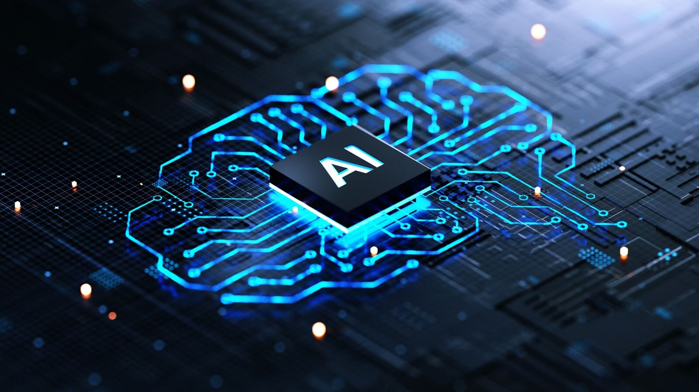

La IA ya no es ciencia ficción. Está en nuestro celular, en la escuela, en el arte y en el trabajo. En este sitio vas a ver su impacto y por qué debemos usarla con ética.
La IA puede crear imágenes, ayudar en el trabajo y resolver problemas, pero también puede tener errores y prejuicios si no la usamos bien.

1. Cómo la IA cambia el arte y el trabajo.
2. Los problemas éticos de los algoritmos.
3. Cómo usar la tecnología para el bien social.